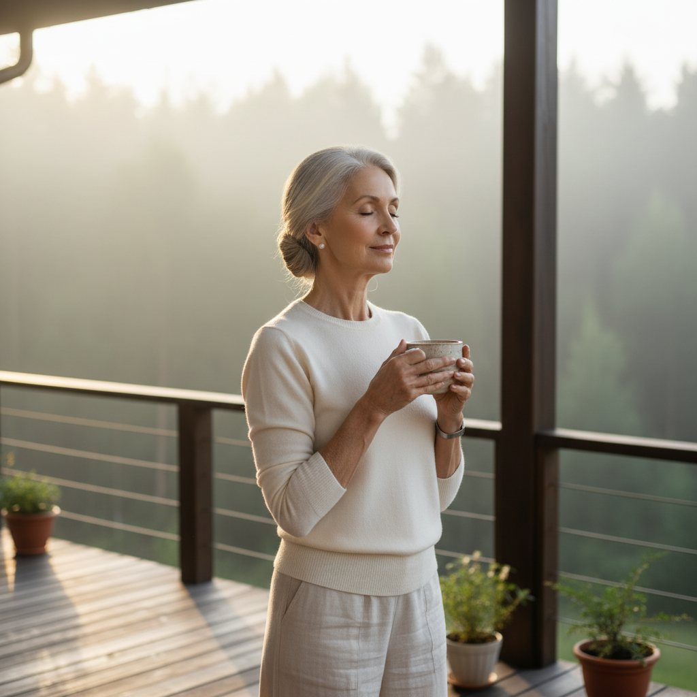
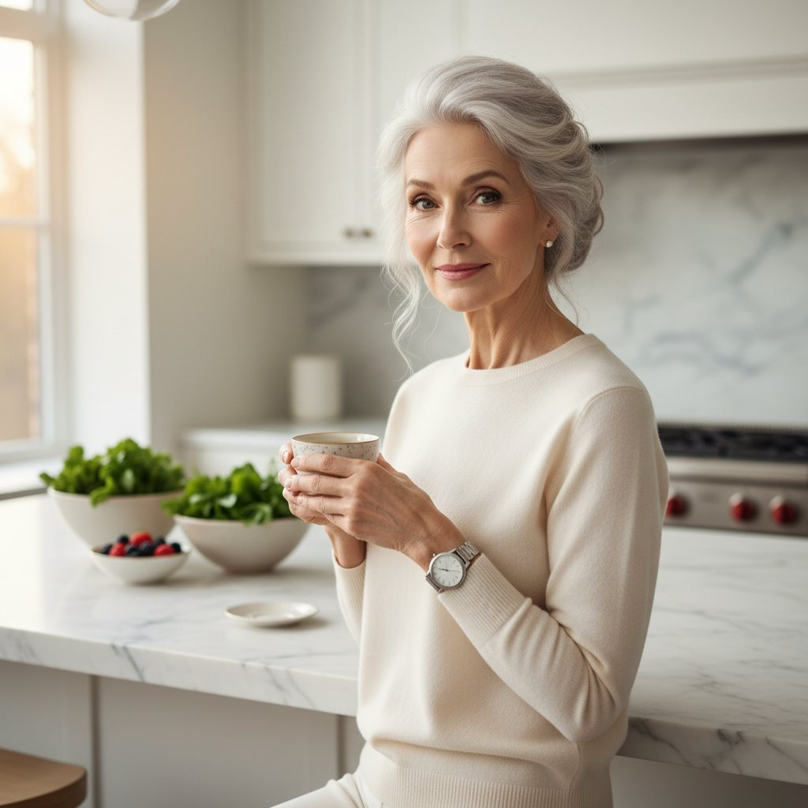
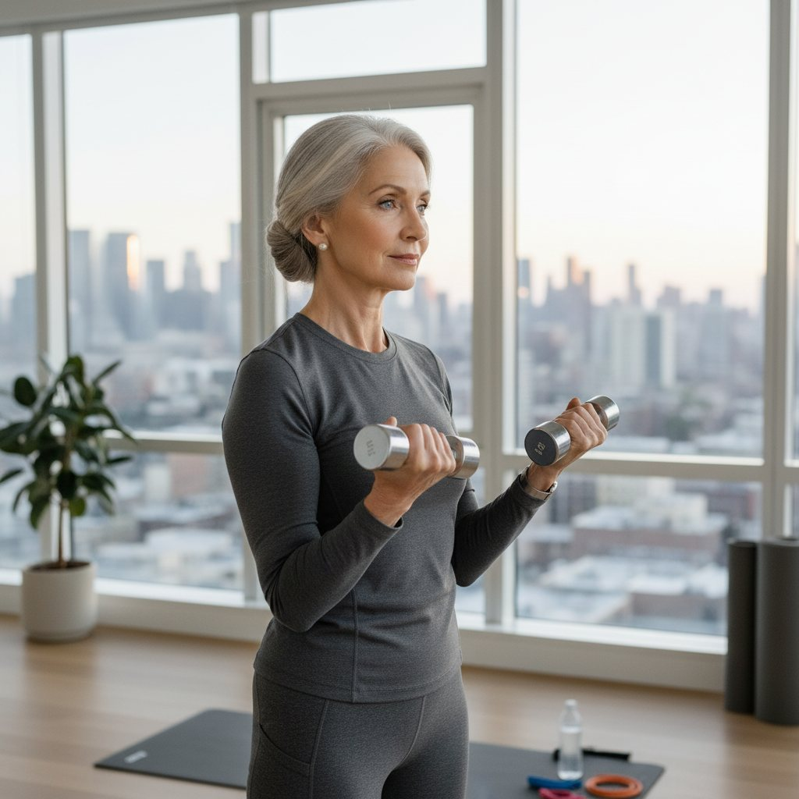
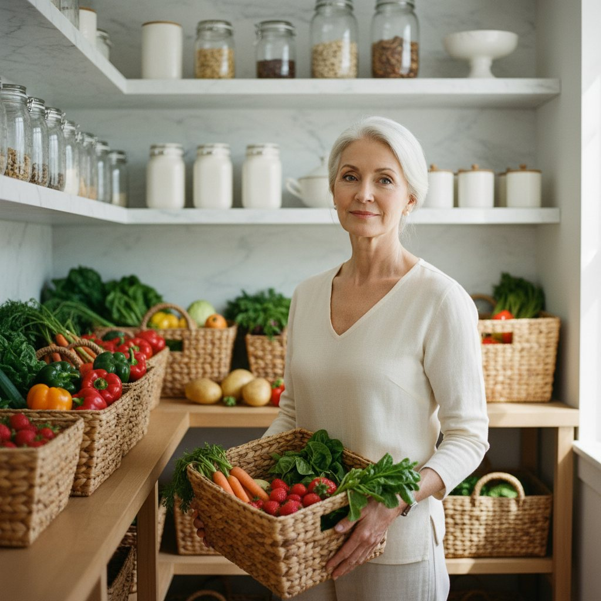
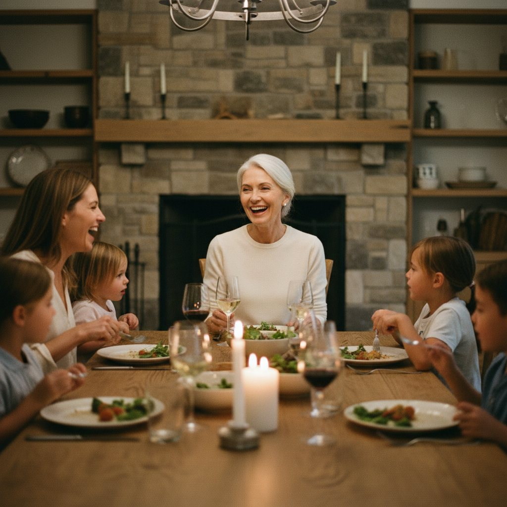

6:30 — террасаЧай, тишина и туман над лесом. Мой день начинается не с почты.

Я — Богдана Козырева. Сибирячка, построившая свой бизнес после 50. За 30 дней покажу, как есть вкусно, сытно и без чувства вины — и при этом молодеть. Меню на каждый день, рецепты из соседнего магазина и секреты из собственной кухни.
Без голода · без спортзала · без «чудо-капельниц» · простые продукты

«Диеты давали минус три —
а через месяц было
плюс пять обратно»
Знакомо? Это не отсутствие силы воли. Это система, которая воюет против тебя. Марафон — перемирие: ты и еда снова на одной стороне.
«В моём возрасте уже поздно начинать» —
мне это говорили в 50. Я начала в 55.
— Богдана · и это было только начало
Убираем сахар и «пакетики», налаживаем воду, начинаем ходить. Быстрые победы с первого дня.
Белок в каждый приём, клетчатка 30 г, живые жиры. Рецепты, которые готовятся за 20 минут.
Утренний ритуал, 8000 шагов, здоровый сон. Мы не худеем — мы оживаем.
Привычки на года: застолья без срыва, меню на месяц, протокол «упала — встала». И выпускной!
Каждую неделю марафон начинается с личного аудио-приветствия. Вот первое:
«Богатство — это не цифры на счету.
Это энергия проснуться и захотеть жить»
Это не постановка. Это мой обычный вторник. И твой — тоже может быть таким. Не «когда-нибудь», а через 30 дней.



«Самое большое богатство —
не на счетах. Оно за семейным столом»
Родилась и выросла в Сибири. Выучилась на инженера, работала, растила детей. О «своём деле» только мечтала — не до того было.
Когда все говорили «в твои годы уже поздно», я открыла своё дело — сеть ферм натуральных продуктов. Ни связей, ни капитала. Только дисциплина и вера.
Врачи сказали «это возраст». Я сказала «это питание». Убрала сахар, пакетики и «лёгкие» ужины — и за год сбросила 14 кг. Без диет, голодовок и чудо-средств.
Живу в доме у леса, управляю бизнесом, готовлю сама — и чувствую себя лучше, чем в 40. Теперь передаю систему, которая сработала у меня. Сработает и у тебя.
Каждый вечер — одна строка: что ела, как спала, настроение и победа дня. Через месяц перечитаешь — и не поверишь, что это про тебя. Полные таблицы — внутри марафона.
| День | Ела | Сон | Настроение | Победа |
|---|---|---|---|---|
| 1 | ____ | ____ | ____ | ____ |
| 2 | ____ | ____ | ____ | ____ |
| 3 | ____ | ____ | ____ | ____ |
Закрашивай день каждый вечер. Цепочка закрашенных дней держит крепче любой силы воли.
Все 30 дней — в марафоне.
Мне семьдесят, и я помню себя в тридцать — уставшую, недовольную собой, вечно на диете между «понедельником» и «после праздников». Я перепробовала всё: считала калории, ела по часам, извинялась за каждый кусочек.
А потом поняла простую вещь: тело — не враг, которого надо укрощать. Это дом, в котором тебе жить всю жизнь.
Я построила бизнес в пятьдесят пять, когда все говорили «поздно». Похудела на четырнадцать килограммов в шестьдесят, когда все говорили «в твои годы уже не получится». Не слушай «уже не получится» — это слова людей, которые сами не попробовали.
За эти 30 дней ты приготовишь десятки блюд, пройдёшь десятки километров и попробуешь маски из собственной кухни. Ты докажешь себе, что можешь. Что в любом возрасте всё в первый раз. Что красивая, здоровая, энергичная — это не «мне повезло», а «я так решила».
У тебя всё получится. Я в тебя верю — я же вижу, ты уже здесь и уже готовишь свой день первый.
С верой в тебя, Ваша
— Богдана ✨
ПЕРЕД СТАРТОМ
«30 дней — это привычка на жизнь. Я рядом»
Оставь заявку — и получи полный марафон: меню на каждый день, рецепты, голосовые письма Богданы, дневник и трекер.
Бесплатно · Без карты · Старт в любой день
Оставь имя и Telegram — Богдана лично пришлёт доступ к марафону и первый день.
Никакого спама. Только марафон и забота.
Богдана уже заваривает чай и пишет тебе в Telegram. Проверь сообщения в ближайшие сутки.